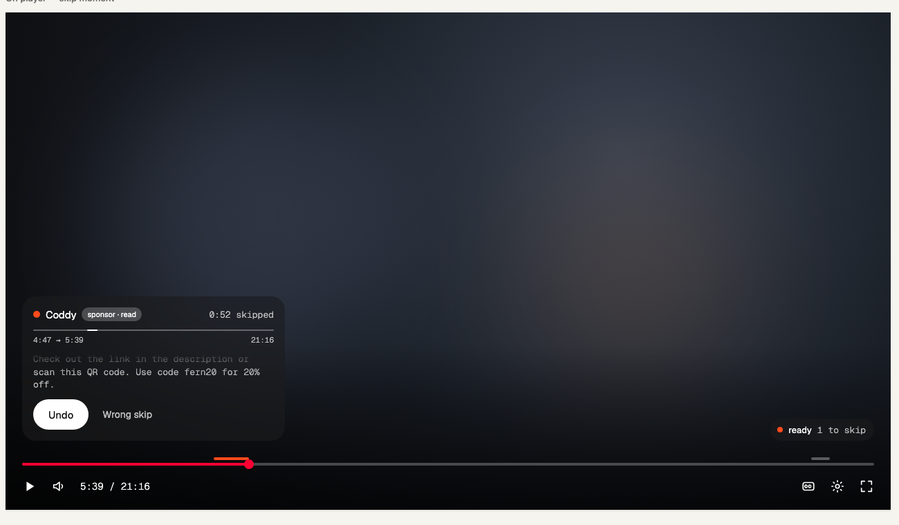
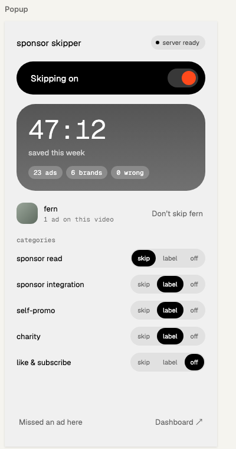
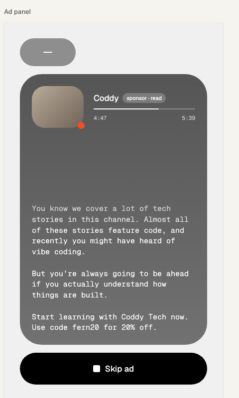
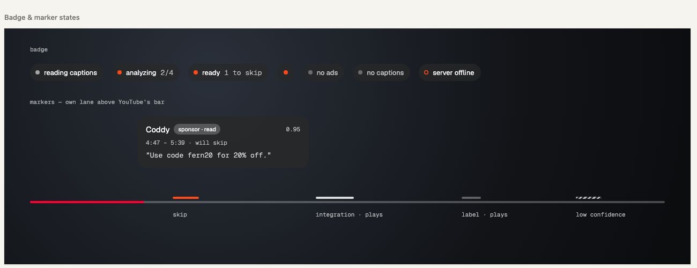

Monochrome plus one accent. Color is state only. Hierarchy is opacity. Depth is tone. No shadows, no borders. Geist for UI, Geist Mono for data and content.
Rebuilt with .sr-toast, .sr-badge and .sr-lane over YouTube's bar (red played portion, 14px scrubber). The marker lane sits 4px above the bar so the accent never touches YouTube's red.

360 wide. Lowercase product name (the product was renamed to Second Read after the mockup), server chip, black master pill with an accent knob, deep hero card with the mono 44 number, channel row, category rows with segmented chips, text buttons in the footer.

Grabber pill, deep card at radius 44 with the channel thumbnail and an accent corner dot, brand + chip, hairline with mono timestamps, the ad's transcript in fading mono, black full-width "Skip ad".

Seven badge states, the marker lane above YouTube's bar, and the hover tooltip. Markers keep the shape encoding: filled accent = skip, hollow outline = integration, dim fill = label, hatch = low confidence.

| brand | skips |
|---|---|
| Coddy | 3 |
| Odoo | 8 |
Light sheet, deep tiles for numbers, light cards for tables (secondary blocks). Numbers in mono tabular, verdicts in mono at o2, histogram peak in accent.
| brand | spots | creators | read / integr. | skips | skipped | avg len | watch-through | top creators |
|---|---|---|---|---|---|---|---|---|
Coddy creator-code reads, 0:52 average; one wrong-skip flag under review | 3 | 1 | 100% / 0% | 3 | 2:36 | 0:52 | 33% | fern |
Incogni a scripted read nobody watches: 96% skipped, 1:21 average | 24 | 6 | 100% / 0% | 23 | 31:02 | 1:21 | 4% | johnny harriswendover |
Odoo raw: Udo, Odu short reads, usually skipped; brand often misheard | 9 | 3 | 100% / 0% | 8 | 5:28 | 0:41 | 12% | fern |
Notion always integrated: the product does the video's work | 7 | 4 | 0% / 100% | 0 | – | 1:08 | – | ali abdaalthomas frank |
| brand | spots | skips | avg len |
|---|---|---|---|
Incogni a scripted read nobody watches | 24 | 23 | 1:21 |
Notion always integrated | 7 | 0 | 1:08 |
WCAG ratios for text on every surface. White at o1 and at o2 pass across the whole deep gradient (#444444 → #5A5A5A): the bottom stop is the lightest grey where o2 still reads 4.5:1, and the top was darkened to keep the card's depth. 0.6 and o3 are not used for text on a deep card.
| surface | text | o1 | o2 | 0.6 | o3 | verdict |
|---|---|---|---|---|---|---|
| sheet #F0F0F0 | ink | 18.4 | 8.7 | 5.5 | 4.6 | passes through o3 |
| deep card #444444 (top) | white | 9.7 | 6.0 | 4.7 | 4.2 | o1, o2 pass |
| deep card #4F4F4F (middle) | white | 8.2 | 5.2 | 4.2 | 3.8 | o1, o2 pass |
| deep card #5A5A5A (bottom) | white | 6.9 | 4.5 | 3.7 | 3.4 | o1, o2 pass across the whole card |
| light card #8E8E8E → #B4B4B4 | ink | 6.4 – 10.1 | 4.5 – 6.2 | 3.5 – 4.4 | 3.2 – 3.8 | o1, o2 pass |
| dark sheet #111 / cards #2A → #3A | white | 11.4 – 18.9 | 6.8 – 9.9 | 6.3 | 4.7 – 6.2 | passes through o3 |
| glass / tooltip over #282828 | white | 14.7 | 8.4 | 6.3 | 5.5 | passes (darker video = better) |
| glass over #282828 | accent | 4.4 | – | – | – | dot and marks; text only at ≥ 18px |
| deep card #444444 → #5A5A5A | accent | 2.1 – 2.9 | – | – | – | accent on a card is a dot, never text |
| sheet #F0F0F0 | accent | 2.9 | – | – | – | accent on the sheet is the toggle knob, never text |
Glass sits over video, so its real contrast depends on the frame. At 62% of #1C1C1C over a mid-grey frame the effective background is about #4E4E4E, where white o2 still reads 4.6:1.